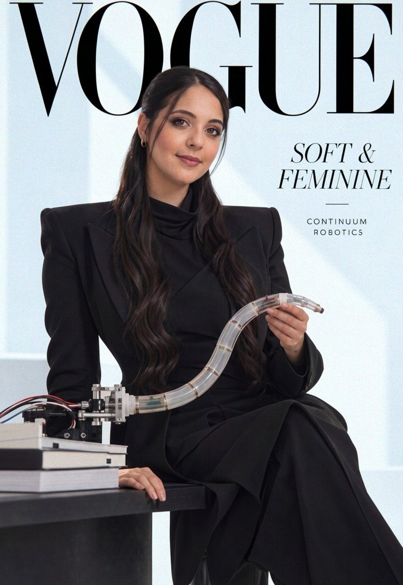
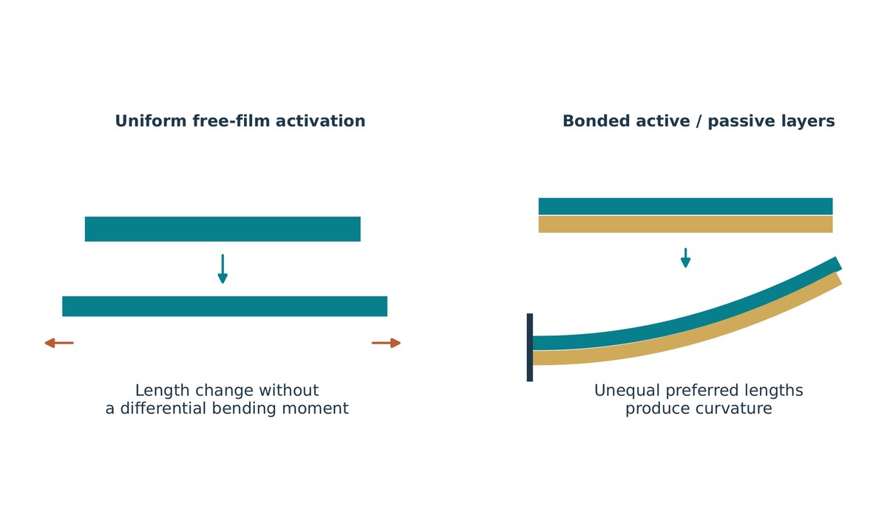
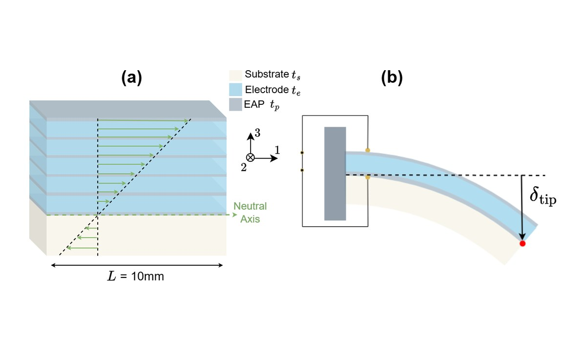
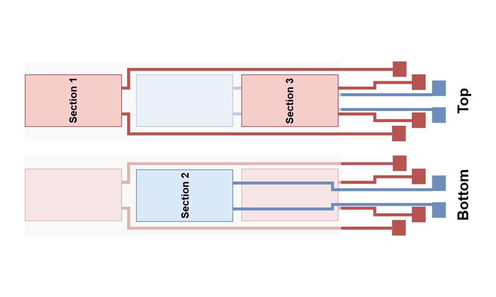
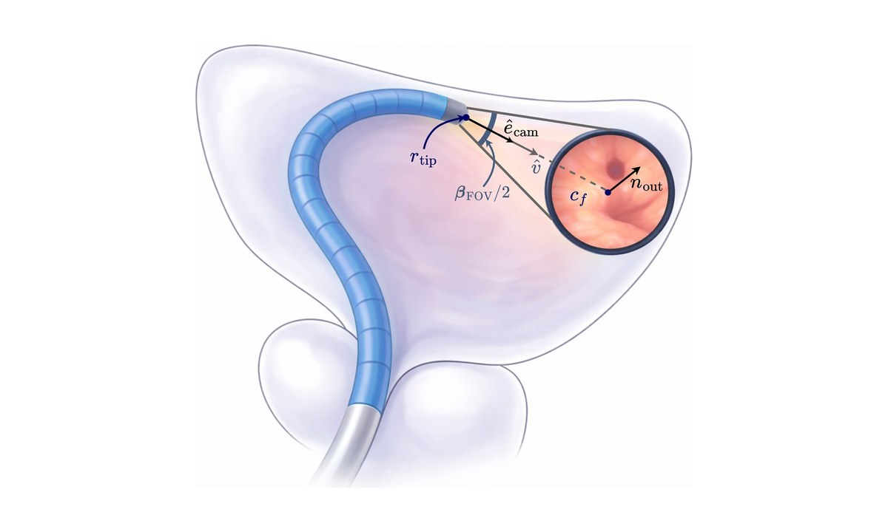

PhD candidate in robotics, Arts et Métiers, Paris
Soft, steerable robots
for bladder inspection.
I'm Imane Ferradj. I work with electroactive polymers, thin films that bend when you apply a voltage. My PhD is about understanding these actuators, controlling them, and using them to steer a miniature continuum robot for telecystoscopy.

From the material to the robot.
I started with the material itself, measuring how it responds to an electric field. From there I modeled the actuators, learned to control how they bend, and used all of it to design the tip of a small robot for bladder inspection.
How a thin film bends.
An electroactive film stretches when a voltage is applied. Bond it to a passive layer and it curves instead. I measured how these polymers respond, which gave me the parameters for every model that came after.

From film to actuator.
Stacking several active layers on a substrate gives more bending for the same voltage. I model these stacks to predict how far the actuator will bend and to choose its layers.

Making it bend where I want.
Splitting the actuator into sections that are driven separately lets you shape it, not just bend it. I work on hysteresis compensation and on control methods that scale to many sections.

Designing the robot's tip.
All of this feeds into the design of a small steerable tip that can point its camera at as much of the bladder wall as possible.

What the robot is for.
A passive shaft goes in through the urethra, and a short steerable tip looks around inside the bladder. As it scans, the video can be stitched into a 3D map of the bladder wall, which helps doctors find and document lesions.
Steer the tip yourself.
Each section of the tip is a strip of electroactive film. Give a section some voltage and it curves; turn the tip and combine the three sections, and the camera can look almost anywhere. The wall turns blue wherever the camera has already looked.
Each section of the tip is a strip of electroactive film. Give a section some voltage and it curves; combine three and the camera can look almost anywhere. The wall turns blue wherever the camera has already looked.
Loading the 3D bladder…
Recent papers.
- 2026
Hysteresis-Compensated Curvature Control of Relaxor EAP Actuators for Mini-Invasive Surgery
23rd IFAC World Congress, Busan
- 2026
Polarization-Based vs. Vision-Based Hysteresis Compensation for Curvature Control of Electroactive Polymer Actuators
SAGIP
- 2025
Multiphysics Model and Hysteresis Compensation for Control of Electroactive Actuators
IEEE/RSJ IROS, Hangzhou